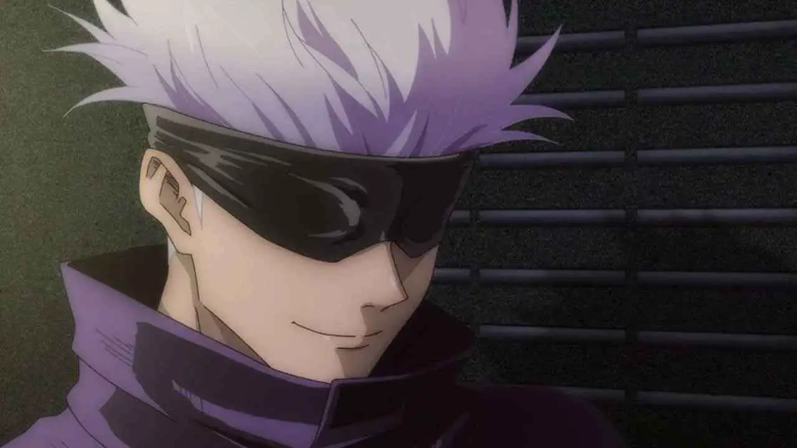
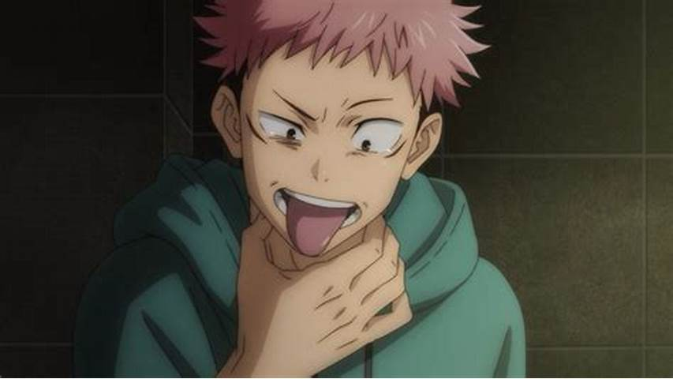
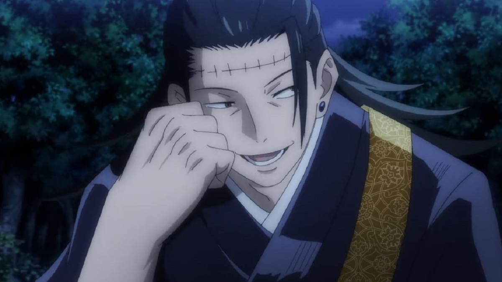
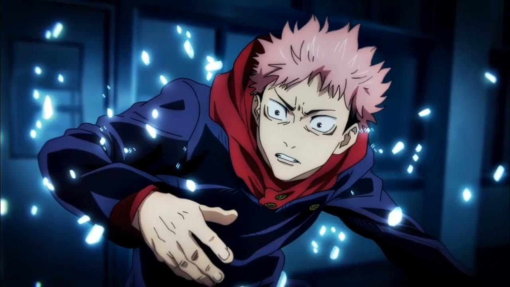
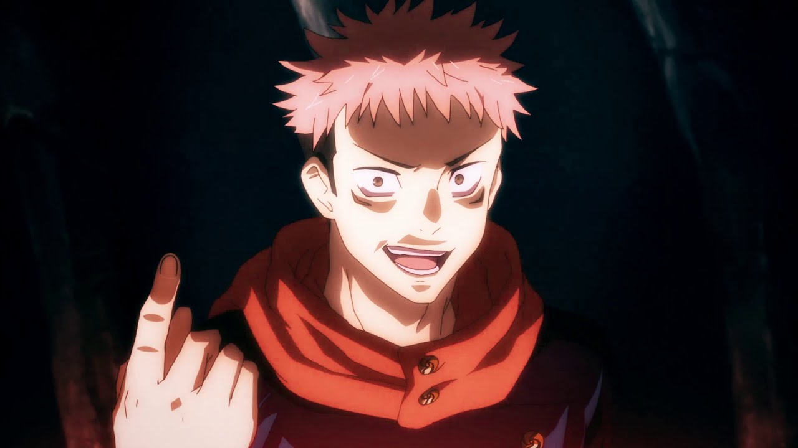
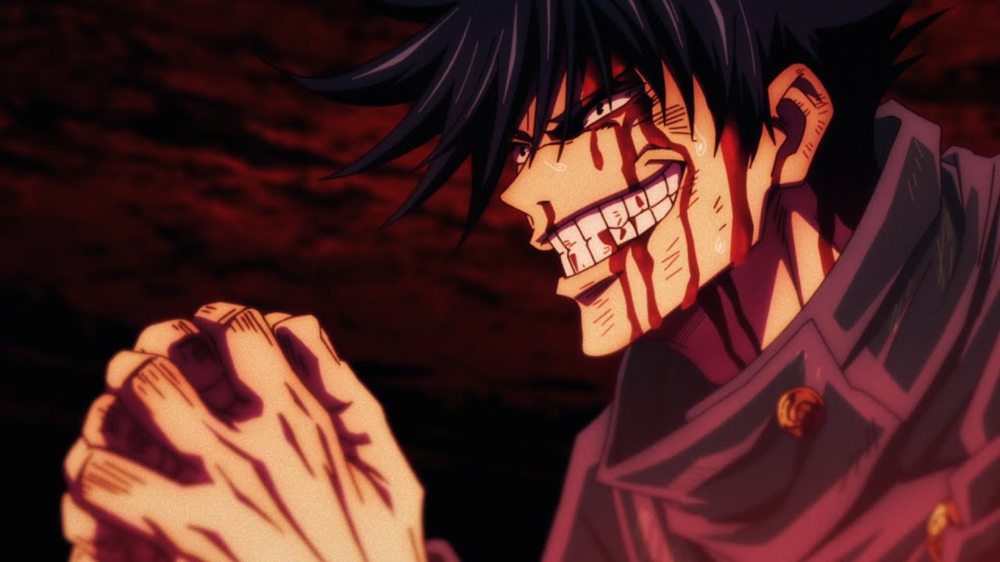

Gojo's Cursed Technique Allows Him To See Despite waering a Blindfold

It seems that despite the blindfold, Gojo is able to see the world around him with a clarity that few others around him can manage
with two fully functional eyeballs.
Some fans have speculated that Gojo's perception extends beyond what two eyes can offer thanks to his limitless Cursed Technique.
Perhaps the infinite void that others struggle to withstand when trapped inside Gojo's Domain is more akin to Gojo's natural level of
perception than fans first assumed.
Yuji Itadori Is A Descendant Of Ryomen Sukuna Which Gives Him The Strength To Harbor The King Of Curses
Just because shared lineage is common of Shonen anime doesn't mean that connecting Yuji and Sukuna by blood wouldn't be a wild coincidence.
The odds of Yuji being a descendent of Sukuna and the harbinger of his return are slim, but not so slim that fans couldn't come up with this fan theory.
A big part of this fan theory is founded in the fact that Sukuna shares a likeness with Yuji when inside the young sorcerer's body.
This is likely nothing more than an artistic decision that simplifies the connection between Yuji and Sukuna,
but it does make fans question what the real Sukuna looked like back in their prime.
Suguro Geto May Not Be The Jujutsu Sorcerer That Most Fans Think He Is
The introduction of Suguro Geto in volume 0 of the manga series presents the evil jujutsu sorcerer with a slightly different character design than
fans of the anime are used to.
The black barbed wire tattoo that cuts Geto's forehead in half throughout the Jujutsu Kaisen anime is gone when Geto is shown to fans in his 2017 iteration.
Some fans have theorized that this line is more than just a tattoo.
Some believe that Geto is being controlled by some outside source that managed to hijack his brain.
This theory was confirmed when Geto's head opened up to reveal a cursed brain smiling back at manga readers.
Yuji Is Able To Break His Opponents Fighting Spirit By Tapping Into A Subconscious Cursed Technique
Though Itadori Yuji is only a first year at Tokyo Jujutsu High he has proven that the strength of a jujutsu sorcerer can not be measured by age.
Yuji's strength exceeds the usual expectations of a first year student by a number of degrees.
Still, the only cursed techniques that Yuji has shown an aptitude for are Black Flash and Divergent Fist.
While both techniques are powerful, they lack the complexity that Nobara and Megumi's cursed technique's possess.
Some fans have speculated on the idea that Yuji has a subconscious technique that allows him to infiltrate his enemies'
memories and destroy their fighting spirit. The false memory flashbacks that Todo sees while fighting Yuji are used as proof
of Yuji's subconscious cursed technique.
Yuta Will One Day Return To Save The Day As The World's Strongest Jujutsu Shaman
The manga for Jujutsu Kaisen began as a 4 chapter miniseries called Tokyo Metropolitan Curse Technical School. This story followed a different protagonist named Yuta, whose cursed energy was strong enough to create a curse dubbed the Queen of Curses.
Yuki Tsumuko Is More Than Just A Powerful Sorcerer And A Season 1 Cameo, She Is Yuji Itadori's Mother

Perhaps the wildest fan theory claims that Yuki Tsumuko is Yuji's mother. This theory is founded almost solely upon the fact that the lines drawn under Yuki's eyes look eerily similar to the ones drawn under Yuji's eyes.
Yuji Itadori Is One Of The Nine Cursed Womb Death Paintings

Before Yuji Itadori ever enrolled at Tokyo Jujutsu High school an evil sorcerer by the name of Noritoshi Kamo forced a woman
born half-human half-curse to live through 9 pregnancies and 9 terminations.
This dastardly deed created the 9 cursed womb death paintings.
Each cursed womb contains the strength of a special grade curse, but none of them have shown any agency of their own until combined with a host.
One fan theorist has reasoned that the only thing capable of holding Sukuna would be an extremely powerful vessel.
Perhaps one of the 9 cursed wombs grew up into the young man we know as Yuji Itadori.
Megumi Is Destined To Turn To The Dark Side Of The Jujutsu Sorcery World
After watching Gojo combine a blue cursed technique with a red reverse cursed technique fans should have recognized the binary nature of Jujutsu Kaisen's
imagery/symbolism. Or, at the very least, one fan used this shot to imagine a binary imagery/symbolism that offers plot spoilers to fans of the
series.
By applying this binary symbolism to the relationships in JJK, Megumi is linked to Yuji in the same way Geto is tied to Gojo.
These two light and dark binary relationships bring Yuji and Gojo together with two different emotionally stunted peers.
If Megumi follows the same path as Geto, he is destined to fall to the dark side of the jujutsu world.